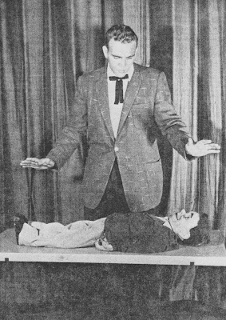

VENTRILO-MAGIC!
3/13/2009
THE ARTS OF VENTRILOQUISM & MAGIC COMBINED!
Ventrilo-Magic is one of the most popular books written by Col. Bill Boley. In it he details the secrets of combing ventriloquism and magic simultaneously in the same bit! Complete instructions (including plans for building props) and routines. Refreshingly innovative and - MAGICAL!
Contents: Johnny In The Bottle, Joann The Card Duck, Time To Change Clothes, The Talking Table, Dummy Levitation, The Appearing Vent Figure, Producing Figure From The Square Circle, Producing Figure From Tip Over Box (I built one of these used it many times), The Balloon Trick, Bare Bones Of The Story, The Wilting Flower, The Fortune Teller, plus Other Tricks.
Contents: Johnny In The Bottle, Joann The Card Duck, Time To Change Clothes, The Talking Table, Dummy Levitation, The Appearing Vent Figure, Producing Figure From The Square Circle, Producing Figure From Tip Over Box (I built one of these used it many times), The Balloon Trick, Bare Bones Of The Story, The Wilting Flower, The Fortune Teller, plus Other Tricks.

(Above) Col. Bill Boley performs levitation of a dummy. 1958
* * * * * *
Note from Clinton: Ventrilo-Magic is one of more than two dozen books I have listed now for eBay auctions ending Monday morning. See them all Here.